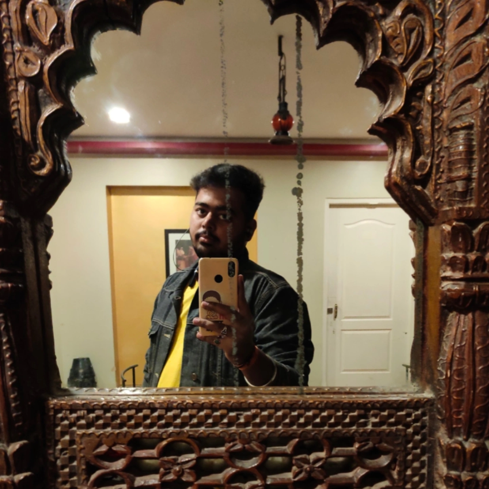
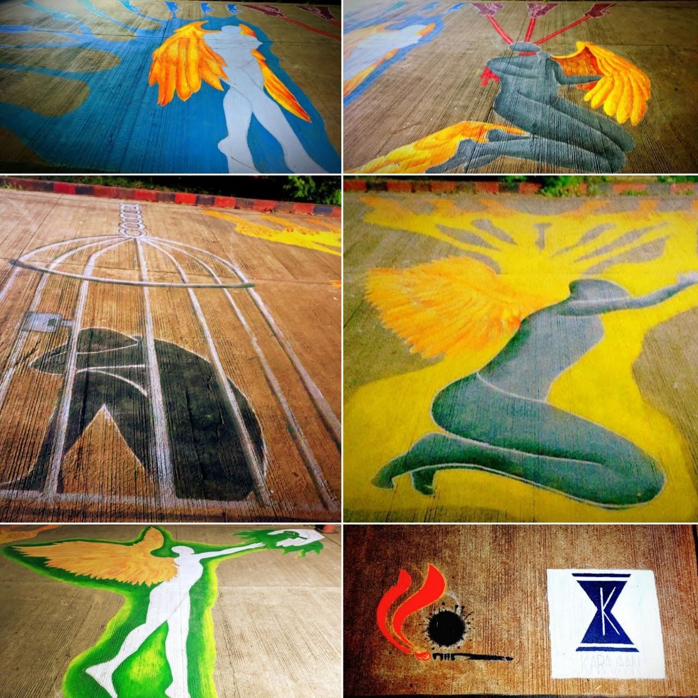
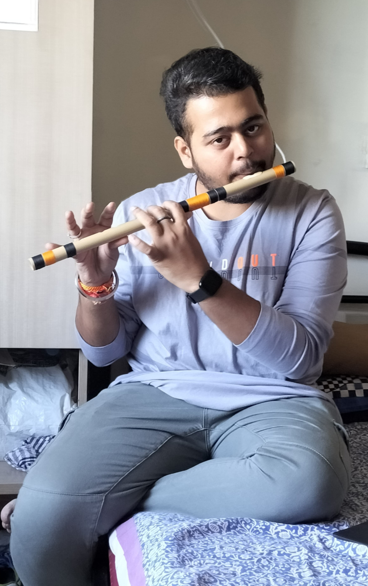
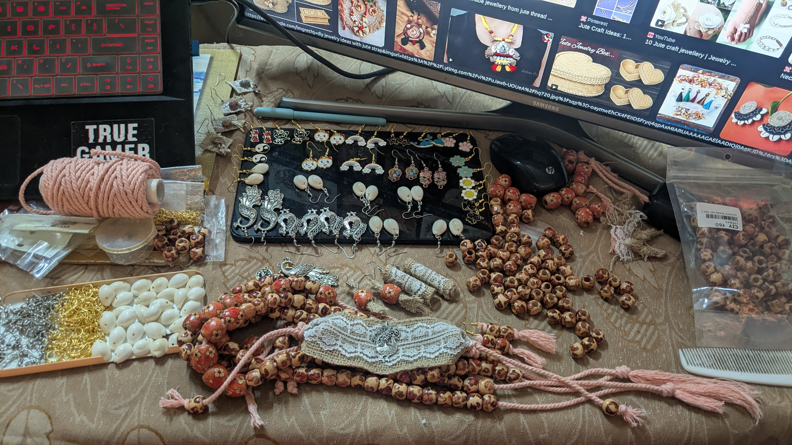

Moments & Memories
Glimpses of life beyond the terminal

A moment of reflection.

Art Club- Leading creative initiatives at IISER Pune.

A little Flute session.

HandCrafts made by me.

Capturing the moment.

Playing my guitar.